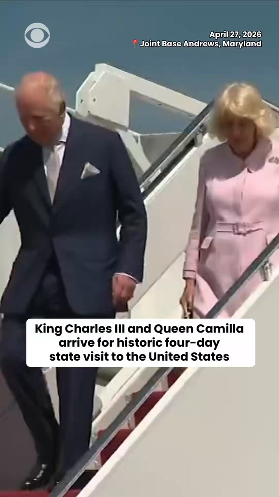
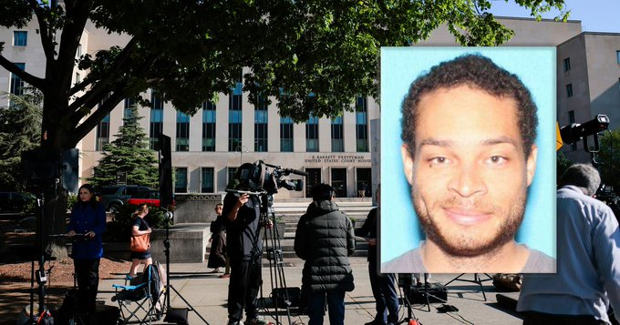
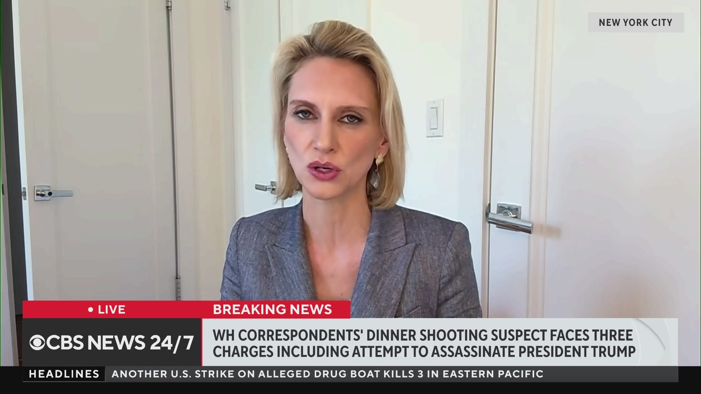
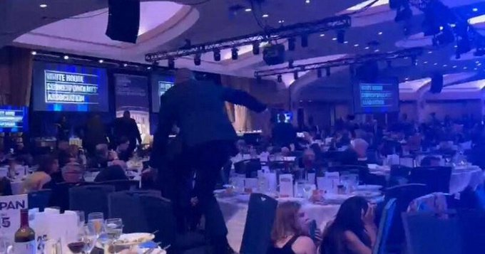
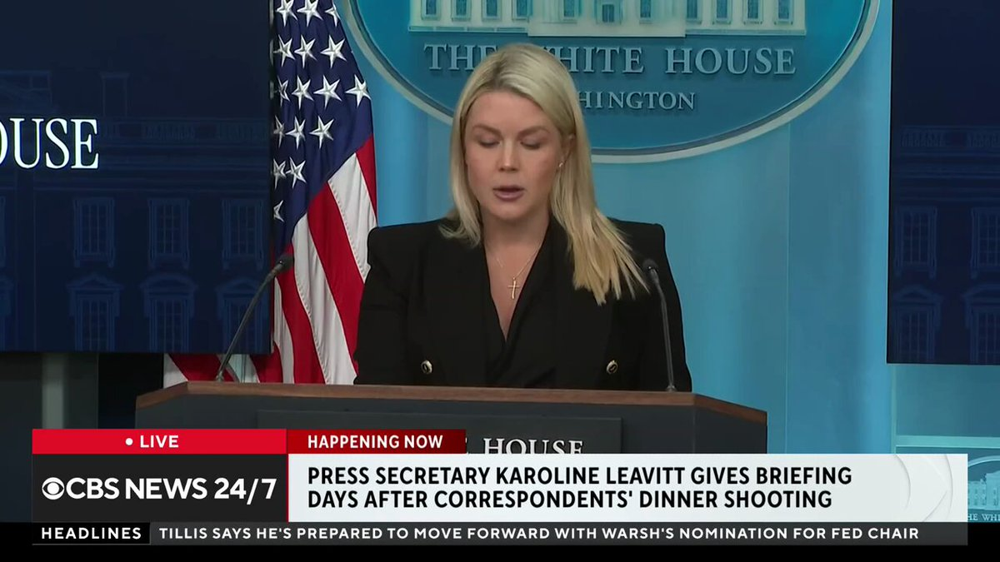
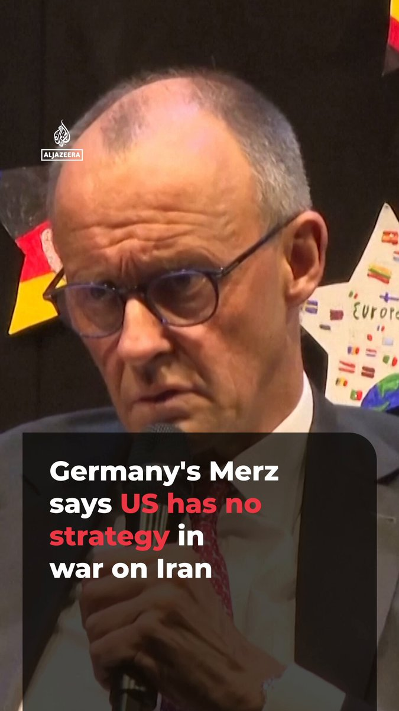
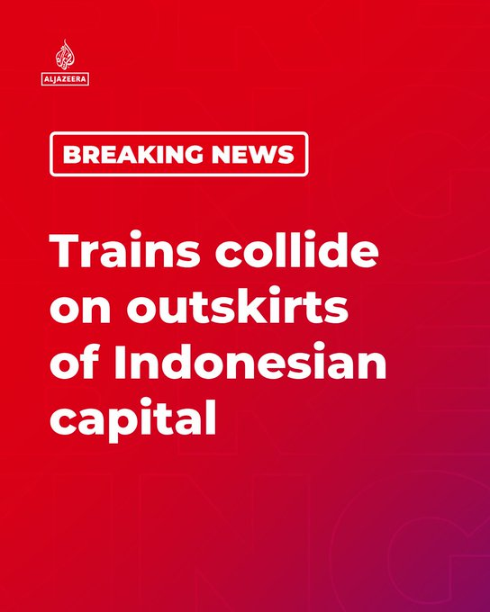
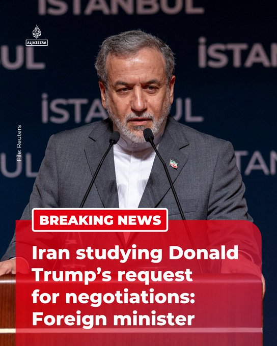

@CBSNews
📝 原文: Documents reveal new details about correspondents' dinner attack
🇨🇳 译文: 文件揭示了记者晚餐袭击事件的新细节

🕒 2026-04-27T21:00:00+00:00
| 来源 | 旧窗口内数量 | 本次新增 | 本次淘汰 | 当前窗口内共有 |
|---|---|---|---|---|
| 推文 + Dawn 新闻 | 0 | 47 | 0 | 47 |
| ARY News | 0 | 0 | 0 | 0 |
注：淘汰数 = 旧窗口内数量 + 本次新增 - 当前窗口内共有






















暂无文章。